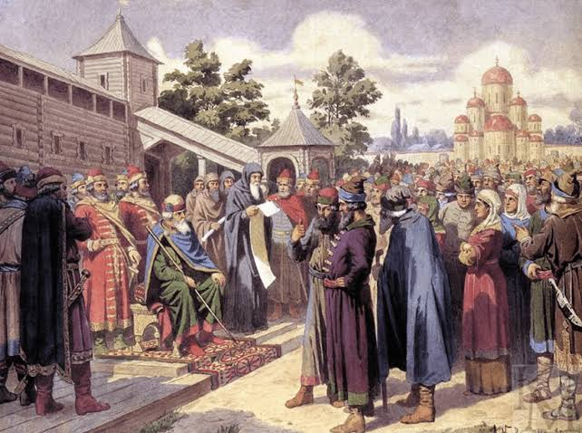
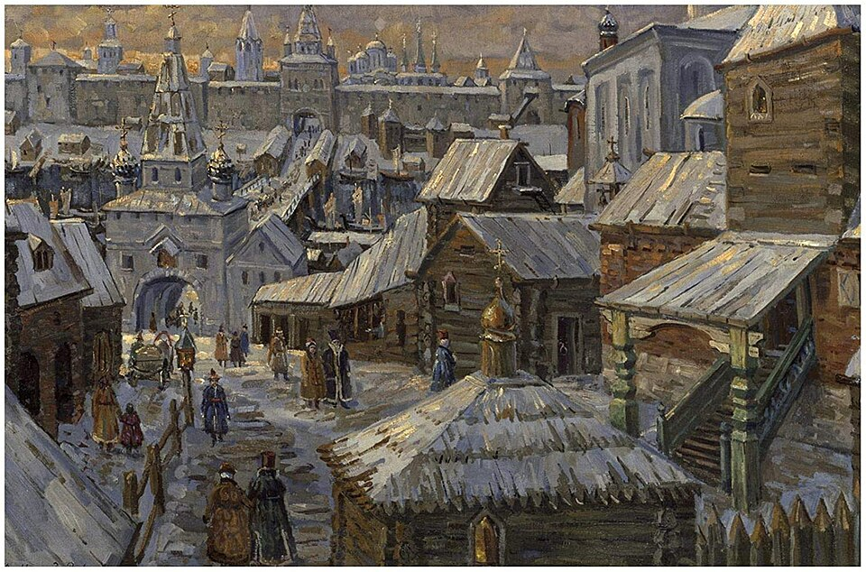
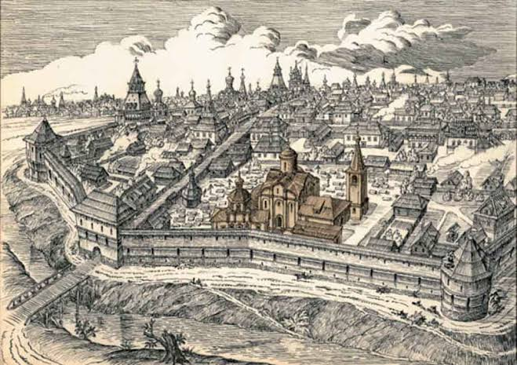
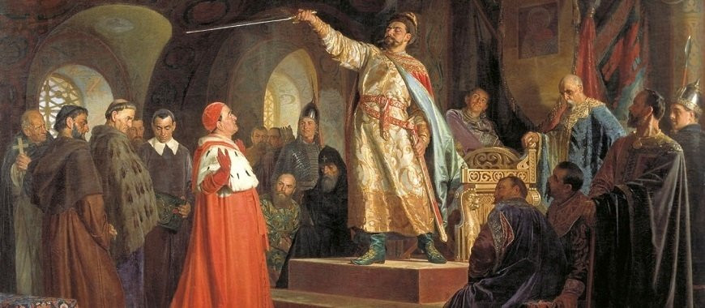

Что это такое?
После смерти киевского князя Мстислава Великого в 1132 году единое Древнерусское государство распалось на несколько крупных самостоятельных центров. Этот период называют феодальной раздробленностью.
Если в середине XII века насчитывалось около 15 княжеств, то к началу XIV века их число выросло до 250. Каждое княжество вело свою политику, чеканило монету и содержало войско. Однако русские земли сохраняли единство языка, культуры и веры.
Как это произошло: хронология распада
Распад не был одномоментным событием. Ещё в 1097 году Любечский съезд князей закрепил принцип «каждый да держит отчину свою», что юридически оформило раздел земель между ветвями Рюриковичей. После смерти Владимира Мономаха (1125) и его сына Мстислава (1132) центробежные силы взяли верх.
- 1125–1132: обособление Суздальского княжества при Юрии Долгоруком, выделение Муромского княжества из Черниговского.
- 1136: Новгород изгоняет князя Всеволода Мстиславича и оформляется как боярская республика.
- 1141: образование крупного Галицкого княжества на юго-западе.
- XII–XIII вв.: дробление продолжается. Черниговская земля делится на волости (Новгород-Северский, Курск, Путивль и др.), а Владимиро-Суздальская — на уделы.
Почему единое государство распалось
У раздробленности были глубокие причины, а не только личные амбиции князей.
- Экономическая основа: господство натурального хозяйства. Каждая земля обеспечивала себя сама, и экономических связей, которые удерживали бы страну вместе, было слишком мало.
- Княжеское наследование: «лествичный» порядок (переход власти к старшему в роду) вызывал постоянные споры. Каждая ветвь Рюриковичей стремилась закрепить за собой землю как «отчину», а не как временное владение.
- Рост городов: с середины XII века археологи фиксируют подъём древнерусских городов. Местные центры (Новгород, Владимир, Галич, Смоленск) набирали силу и не хотели делиться доходами с Киевом.
- Ослабление внешней угрозы: после разгрома половцев в начале XII века необходимость в единой обороне под властью Киева стала восприниматься менее остро.
Чем это обернулось: Калка и иго
Главным испытанием для раздробленной Руси стало столкновение с монголами. В 1223 году на реке Калке русско-половецкое войско было разгромлено. Причина поражения — отсутствие единого командования: князья действовали разрозненно, а киевский князь Мстислав Романович наблюдал за гибелью других полков, не вступая в бой.
Как отмечают историки, выводов из Калки сделано не было. Князья продолжили усобицы, а монголы получили разведывательные данные о Руси. Зимой 1237 года войска Батыя вторглись в рязанские земли, и раздробленная страна не смогла организовать совместный отпор.
Однако именно в период раздробленности вызревали предпосылки будущего объединения. Северо-Восточная Русь с сильной княжеской властью стала основой, на которой позже поднялась Москва. Перенесение митрополичьей кафедры в Москву (1320-е годы) сделало её церковным центром, а московские князья постепенно сосредоточили в своих руках сбор дани для Орды и «собирание земель».
Правители эпохи раздробленности
Единой династии, как в период Древнерусского государства, больше не было. В каждой земле правила своя ветвь Рюриковичей, а в Новгороде князя вообще приглашало вече. Ниже — правители, которые определили облик эпохи.
Киевские князья (период упадка)
- Мстислав Великий (1125–1132) — последний князь, при котором Русь сохраняла единство. После его смерти начался распад.
- Ярополк Владимирович (1132–1139) — сын Мономаха, пытался удержать контроль над уделами, но безуспешно.
- Всеволод Ольгович (1139–1146) — черниговский князь, силой занял Киев; его правление показало, что киевский престол стал объектом борьбы.
- Изяслав Мстиславич (1146–1154) — вёл упорную борьбу с Юрием Долгоруким за Киев.
- Юрий Долгорукий (1155–1157) — суздальский князь, занял Киев в конце жизни; при нём в летописи впервые упомянута Москва (1147).
- Мстислав Романович (1212–1223) — погиб на реке Калке, наблюдая за разгромом союзных войск.
Владимиро-Суздальские князья
- Юрий Долгорукий (1125–1157) — основатель династии суздальских князей, боролся за Киев и укреплял Северо-Восточную Русь.
- Андрей Боголюбский (1157–1174) — перенёс столицу во Владимир, разгромил Киев в 1169 году, но был убит боярами в результате заговора.
- Всеволод Большое Гнездо (1176–1212) — период наивысшего расцвета княжества; его сыновья стали родоначальниками многих удельных династий.
Новгородские правители
- Всеволод Мстиславич (1117–1136) — последний князь, изгнанный новгородцами; после этого Новгород стал республикой.
- Посадники и тысяцкие — реальная власть принадлежала выборным должностным лицам. Например, посадник Михалко Степанович (XII век) и Онцифор Лукинич (XIV век) играли ключевую роль в управлении.
Галицко-Волынские князья
- Ярослав Осмомысл (1153–1187) — могущественный галицкий князь, успешно противостоял боярам и соседям.
- Роман Мстиславич (1199–1205) — объединил Галич и Волынь в единое княжество, вёл активную внешнюю политику.
- Даниил Романович (1238–1264) — противостоял монголам, получил от папы римского титул «короля Руси», но не смог добиться полной независимости от Орды.
Обратите внимание: в период раздробленности титул «великий князь» уже не означал реальной власти над всей Русью. Он подчёркивал лишь старшинство среди местных князей, а иногда — претензию на киевский престол.
Как закончилась раздробленность
Выход из эпохи раздробленности был долгим и кровавым. Центром, вокруг которого началось объединение, стала Москва. Первым московским князем, начавшим «собирание земель», был Даниил Александрович, сын Александра Невского. Его преемники продолжали эту политику: скупали земли, захватывали их силой, использовали дипломатию и даже зависимость от Орды для усиления своего княжества.
Переломным моментом стала политика Дмитрия Донского, который впервые передал великокняжеский престол старшему сыну, не разделив его между всеми наследниками. Но старые традиции были ещё сильны, и окончательное объединение растянулось ещё на столетие.
Завершающий этап: Иван III и Василий III
Решающий вклад в преодоление раздробленности внёс Иван III (1462–1505). При нём к Москве были присоединены крупнейшие самостоятельные центры:
- 1478 — Новгородская земля, главный оплот боярской республики.
- 1485 — Тверское великое княжество, давний соперник Москвы.
Процесс завершил его сын, Василий III (1505–1533). При нём были присоединены:
- 1510 — Псковская земля.
- 1514 — Смоленск, отвоёванный у Литвы.
- 1521 — Рязанское княжество, последний крупный независимый центр.
Символическая дата: 1480 год — Стояние на реке Угре. Войска Ивана III и хана Ахмата стояли друг против друга, но до генерального сражения не дошло. Ахмат отступил, и зависимость Руси от Орды фактически прекратилась . Это событие принято считать не только концом ордынского ига, но и важной вехой в становлении единого Русского государства .
Таким образом, условной датой окончания феодальной раздробленности можно считать начало XVI века, когда большинство крупных русских земель оказалось под властью московского князя. Однако историки подчёркивают, что это был постепенный процесс, а не единичный акт: остатки удельной системы сохранялись ещё некоторое время, а окончательное оформление централизованного государства потребовало ещё нескольких десятилетий.
Итог: не только упадок
Феодальная раздробленность — не просто «тёмный период». Это было время, когда:
- расцветали местные культуры и строились выдающиеся храмы (Покрова на Нерли, София Новгородская);
- росли города и развивалось ремесло;
- складывались политические традиции, одни из которых (сильная княжеская власть на Северо-Востоке) определили будущее России, а другие (боярская республика в Новгороде) остались альтернативным путём.
Понимание этого периода важно потому, что из него выросла вся последующая история: и трагедия ордынского ига, и медленное, трудное объединение вокруг Москвы.
Крупнейшие центры

Киевское княжество
«Мать городов русских» постепенно теряет былое могущество, но остается важным культурным и религиозным центром.
Подробнее →

Новгородская земля
Боярская республика с вечевым строем. Князь здесь был лишь военачальником и не имел полноты власти.
Подробнее →

Владимиро-Суздальское княжество
Северо-Восточная Русь с сильной княжеской властью. Именно эти земли станут центром объединения будущей России.
Подробнее →

Галицко-Волынское княжество
Юго-Западная Русь. Здесь княжеская власть часто ограничивалась влиятельным боярством.
Подробнее →